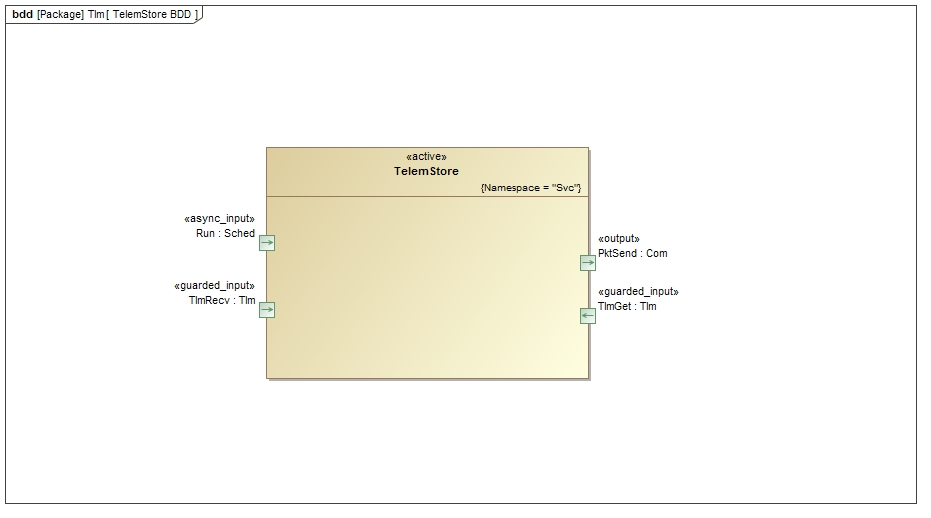
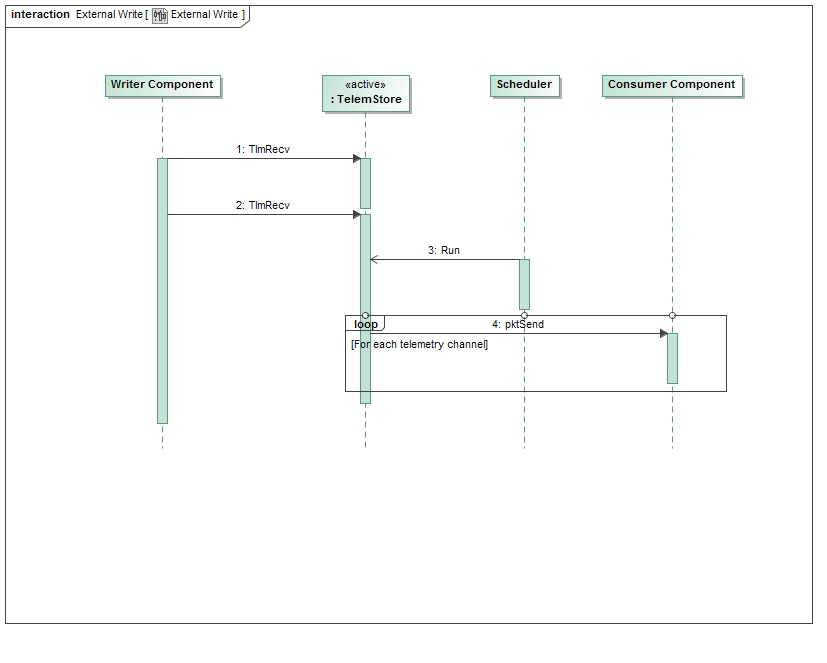

|
F´ Flight Software - C/C++ Documentation
Latest
A framework for building embedded system applications to NASA flight quality standards.
|
|
F´ Flight Software - C/C++ Documentation
Latest
A framework for building embedded system applications to NASA flight quality standards.
|
The Svc::TlmChan Component is used to store telemetry values written by other components. The values are stored in serialized form. The data is stored as a set of telemetry channels in a table. The data can be individually read back or periodically pushed to another component for transporting out of the system. Svc::TlmChan is an implementation of the Svc::TlmStore component in the Svc/Tlm directory.
The requirements for Svc::TlmChan are as follows:
| Requirement | Description | Verification Method |
|---|---|---|
| TLC-001 | The Svc::TlmChan component shall provide an interface to submit telemetry | Unit Test |
| TLC-002 | The Svc::TlmChan component shall provide an interface to read telemetry | Unit Test |
| TLC-003 | The Svc::TlmChan component shall provide an interface to run periodically to write telemetry | Unit Test |
| TLC-004 | The Svc::TlmChan component shall write changed telemetry channels when invoked by the run port | Unit Test |
The Svc::TlmChan component has the following component diagram:

The Svc::TlmChan component uses the following port types:
| Port Data Type | Name | Direction | Kind | Usage |
|---|---|---|---|---|
Svc::Sched | Run | Input | Asynchronous | Execute a cycle to write changed telemetry channels |
Fw::Tlm | TlmRecv | Input | Synchronous Input | Update a telemetry channel |
Fw::Tlm | TlmGet | Input | Synchronous Input | Read a telemetry channel |
Fw::Com | PktSend | Output | n/a | Write a set of packets with updated telemetry |
The Svc::TlmChan component has an input port TlmRecv that receives channel updates from other components in the system. These calls from the other components are made by the component implementation classes, but the generated code in the base classes takes the type specific channel value and serializes it, then makes the call to the output port. The Svc::TlmChan component can then store the channel value as generic data. The channel values are stored in an internal double-buffered table, and a flag is set when a new value is written to the channel entry.
When a request is made for a nonexistent channel, the call will return with an empty buffer in the Fw::TlmBuffer value argument. This is to cover the case where a channel is defined in the system, but has not been written yet. If the channel has not ever been defined, there is no way to programmatically determine that from the TlmGet port call.
The implementation uses a hashing function that is tuned in the configuration file TlmChanImplCfg.hpp. See section 3.5 for description.
This diagram shows the scenario where telemetry packets are generated for an external user:

This diagram shows the scenario where telemetry packets are stored and retrieved as a database:

Svc::TlmChan has no state machines.
In order to speed up lookups for storing and reading telemetry channels, a simple hash function is used to select a location in an array of hash table slots. A configuration value in TlmChanImplCfg.h defines a set of hash buckets to store the telemetry values. The number of buckets has to be at least as large as the number of telemetry values defined in the system. The number of channels in the system can be determined by invoking make comp_report_gen from the deployment directory. The number of has table slots TLMCHAN_NUM_TLM_HASH_SLOTS and the hash value TLMCHAN_HASH_MOD_VALUE in the configuration file can be varied to balance the amount of memory for slots versus the distribution of buckets to slots. See TlmChanImplCfg.h for a procedure on how to tune the algorithm.
TBD
| Document | Link |
|---|---|
| Design Checklist | Link |
| Code Checklist | Link |
| Unit Test Checklist | Link |
To see unit test coverage run fprime-util check –coverage
| Date | Description |
|---|---|
| 6/23/2015 | Design review edits |
| 7/22/2015 | Design review actions |
| 9/28/2015 | Unit Test Review additions |